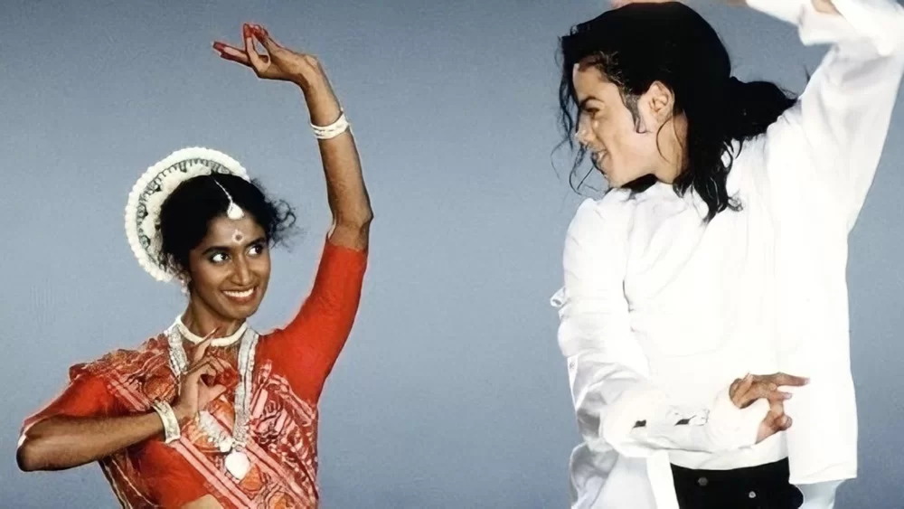
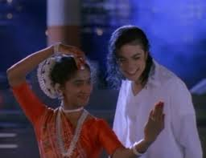
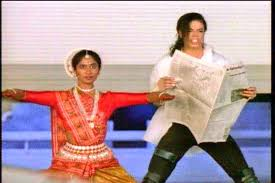
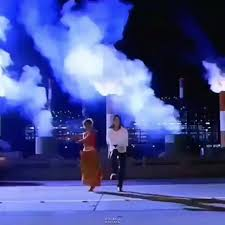

Now that we know Odissi’s past and its individuality, let's explore Odissi’s place in today’s modern world. An example is the Odissi piece named Navadurga. This is personally my most favored piece as it is diverting to act out the goddess Durga livid and enraged while she kills the monster Mahishashur. However, even though the plot of this abhinaya is based on the tales of the gods, it can still be seen relevant in the modern world today as it symbolizes the power of women. One of the most significant pertinence of Odissi in modern times is when the dancer Yamuna Sangarasivam danced with Michael Jackson in his song, Black & White. This clearly shows that Odissi is as modern as it is ancient. It is timeless.


